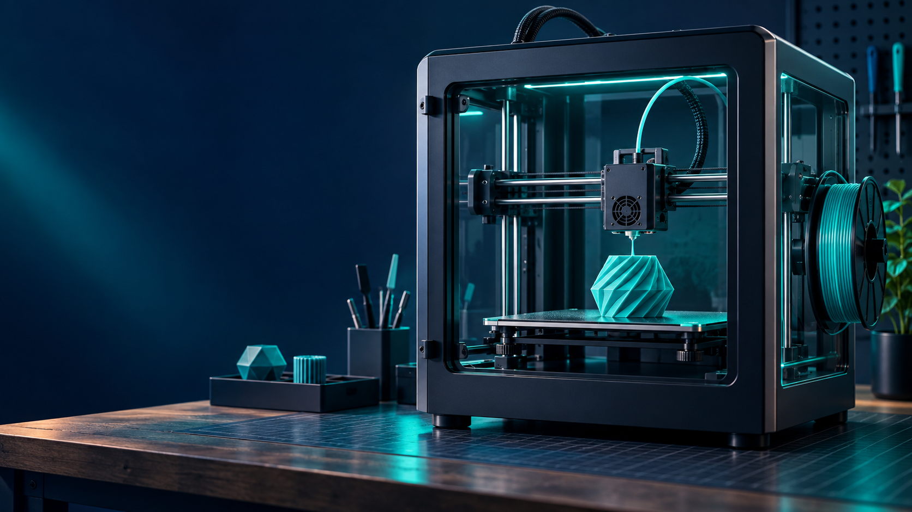

Bambu Lab–Stratasys Verdict: What 3D Printer Owners Know So Far
Last checked: September 22, 2026
A U.S. jury awarded Stratasys about $27.6 million in its patent case against Bambu Lab. The headline is significant, but it does not mean an X1, P1, or A1 on your workbench has stopped working or must be replaced. The useful question for an owner is what has actually changed—and what has not been decided yet.

The result, without the leap to a sales ban
On September 17, a jury in the Eastern District of Texas found Bambu-related companies liable for infringement of four U.S. patents and awarded roughly $27.6 million. The disputed technology includes aspects of purge towers and force-based bed probing. Tom’s Hardware’s September 21 report identifies the X1, P1, and A1 families in its account of the case. Bloomberg Law independently reports the verdict, amount, and four patents.
Tom’s Hardware reported no injunction against those printers at publication. A damages verdict and an order restricting sales are different events. Bambu told the outlet that it disagrees with the verdict and intends to seek post-trial review and appeal. Those steps could change the litigation’s outcome; they do not erase the jury’s finding today.
What this means if you already own a printer
There is no reported instruction in this verdict for owners to stop using their machines, remove features, or change firmware. Do not make a maintenance decision from a viral headline. Continue normal, safety-conscious use and keep the printer’s model, purchase record, firmware version, and any important project files documented.
If you rely on a Bambu printer for paid work, the practical risk is uncertainty around future availability, service, and software—not an established failure of the machine you own. Keep exported design and slicer files, record a known-good print profile, and have a backup production route for deadlines. Those are sensible continuity steps regardless of which company wins the next legal round.
What remains open
This is one verdict within a broader patent dispute. Further post-trial motions, an appeal, and other claims may follow. No source reviewed here establishes a future U.S. sales ban, a price increase, a mandatory firmware change, or the fate of a specific printer feature. We will update this page if a court order or manufacturer notice changes the owner-facing facts.
The patents are U.S. patents. A separate European proceeding has had a different result, so do not treat one jurisdiction’s decision as a worldwide rule. The precise consequences for future products depend on later proceedings and any design changes, not on speculation about what a printer maker might do.
The HomeForge takeaway
Watch for three concrete updates: a new court order, an official Bambu support or firmware notice, and a change to model availability or warranty terms in your region. Until one of those appears, the verdict is an important industry story, not a reason to abandon a working printer.
Sources
- Tom’s Hardware: Texas jury hits Bambu Lab with $27.6M verdict (September 21, 2026; includes Bambu’s response and the injunction status at publication)
- Bloomberg Law: Stratasys wins $27 million from Bambu (September 18, 2026)
- Stratasys 2025 Form 20-F (company filing describing the underlying U.S. litigation before the verdict)